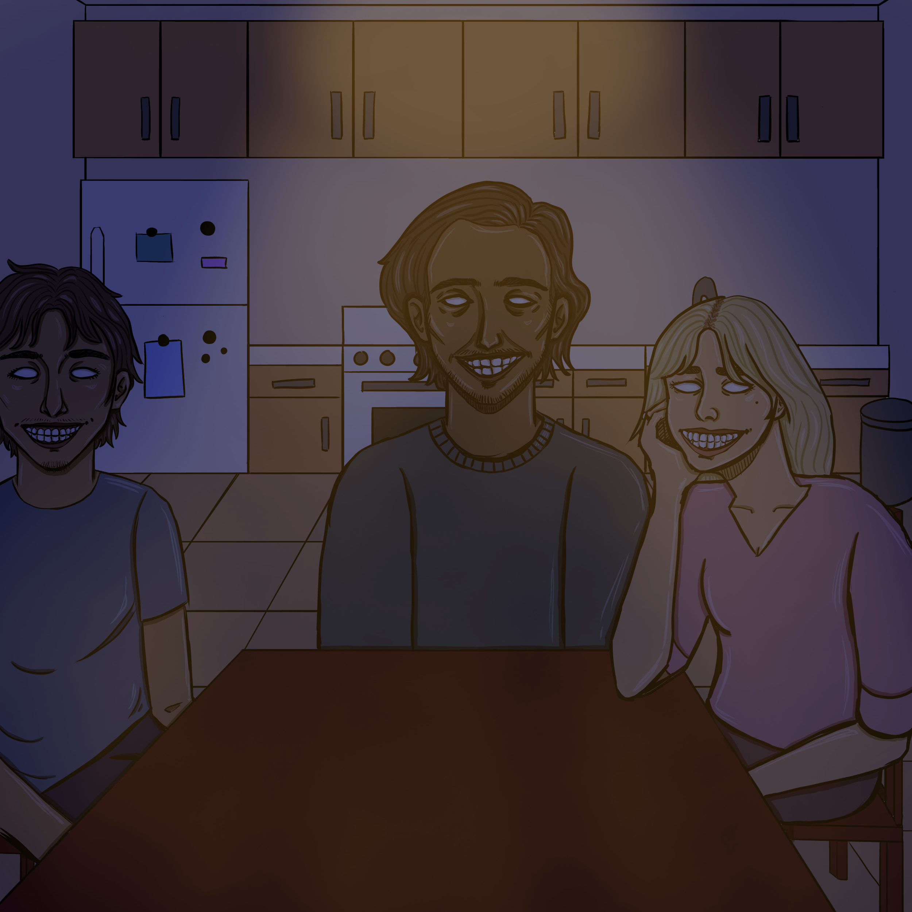

KNOCK
KNOCK
KNOCK
A sequence of three knocks sounded out from the front door. “Ah, I’ll get that.” She got out of her chair and ran to the door.
I heard the door creak open followed by a gruff voice. “Señorita Rosa, how is your daughter doing? I heard that she is sick.”
“Ay, she won’t eat.” The woman’s voice bore a frustrated tone.
I glanced at the peanut gallery surrounding me:
a young man in his twenties who sort of had my eyes—almond-shaped and rimmed with long, dark eyelashes;
a similarly aged woman who seemed to be his wife by the way she was looking at him every now and then with her hand cupping the side of her face, ring finger encrusted with diamonds;
and a middle-aged man who had my bushy eyebrows and long neck.
They all donned the same rigid smile, as if it was copied and pasted onto each of their faces.
Occasionally, they would look at each other and comment on my appearance.
“She’s gaining weight, don’t you think, Papá?”
“She looks much better with her hair long. I don’t know why she ever cut it in the first place.”
“She’s finally wearing some decent clothes today. None of that tomboy shit.”
I grimaced beneath my mask.